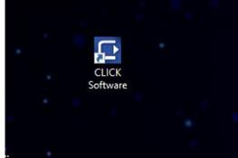
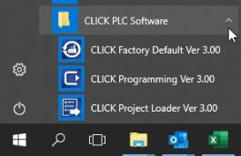
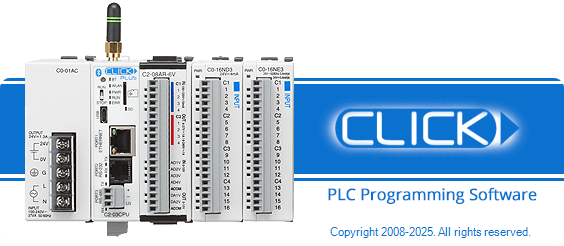

Topic: CL012

| Software Startup |
Topic: CL012
|
Thank you for purchasing the AutomationDirect CLICK PLC family of products. This online Help File provides information that will help you install, set up, program, and troubleshoot the CLICK Programming Software.
For information that is critical to the safety of the personnel who will install and use the PLC, and to the machinery, processes, and equipment controlled by the PLC, please refer to the CLICK Hardware Manual or CLICK PLUS Hardware Manual. The Hardware Manual also includes important information about power and signal wiring, mounting of the PLC, and configuring the PLC system.
The CLICK Programming Software is designed to be a user friendly application. The tools, layout, and Software interaction provide ease of use. In addition, the CLICK Programming Software is provided with this Help File and Quick Start Guide to help answer any questions users may have.
Locate and double-click the CLICK icon on the desktop as shown below or single-click the CLICK icon available from the Windows Start Menu .


Double click the CLICK desktop icon, and the Splash screen displays briefly before the Main Window appears.
